The error I got for the toy problem was 6.1843e-14.
Poisson Blending
My favorite blending result is this photo of Buzz and Woody flying on the
quad. Initially, the source blended onto the target was very dark because
the background color for the source image was much lighter than the
color of the sky for the target image. To make the blended result look more
realistic, I had to increase the contrast of the source image and play
with the highlights and shadows to make the two blue colors as similar as
possible. The Poisson blending algorithm uses least squares to calculate
the best pixels to be copied onto the target region that match a constraint.
The constraint I used minimizes the difference of the gradients between
a source pixel and its neighboring pixels, thereby retaining the gradient in
the source image, but reusing the colors in the target image.
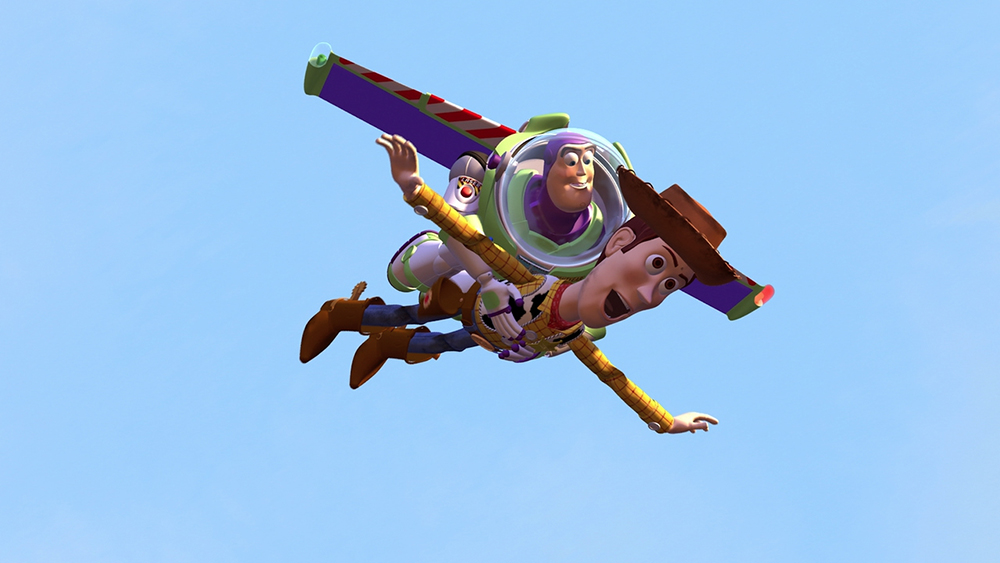
Source
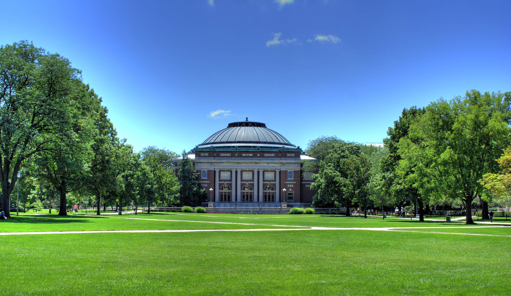
Target
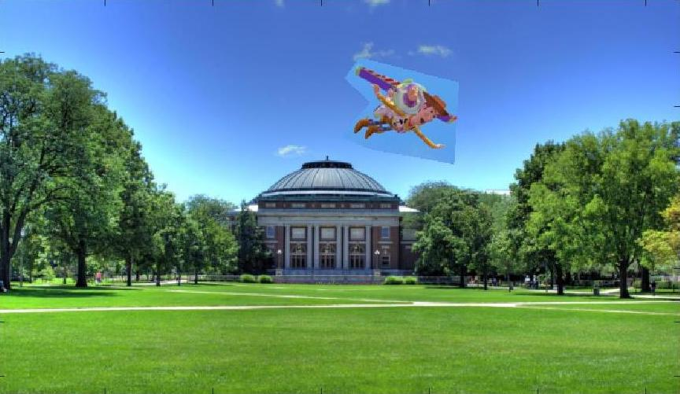
Pixels copied
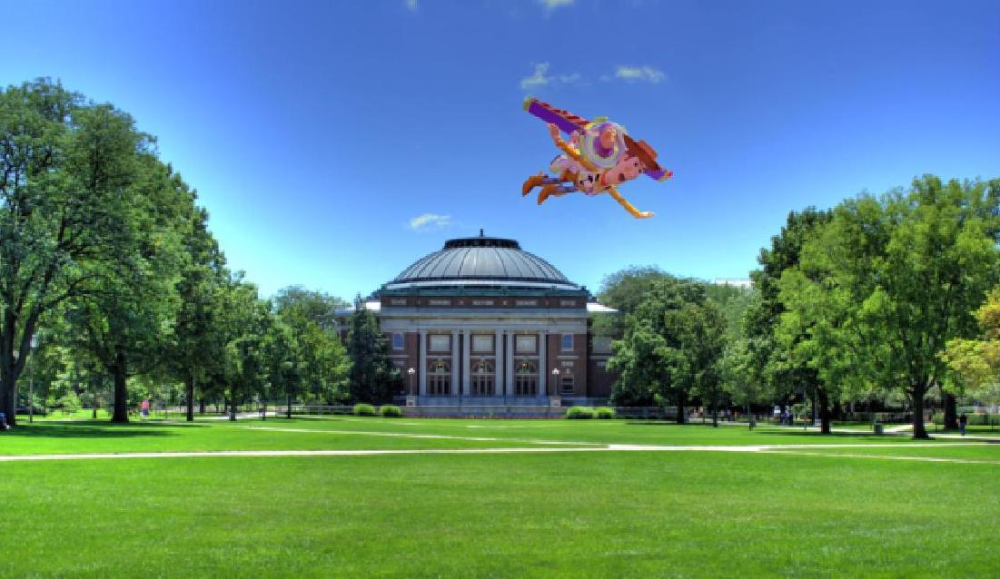
Blended
For my second example, I am blending Ted Cruz's facial features onto Ed
Sheeran's body. The result is Ted Sheeran.
Source
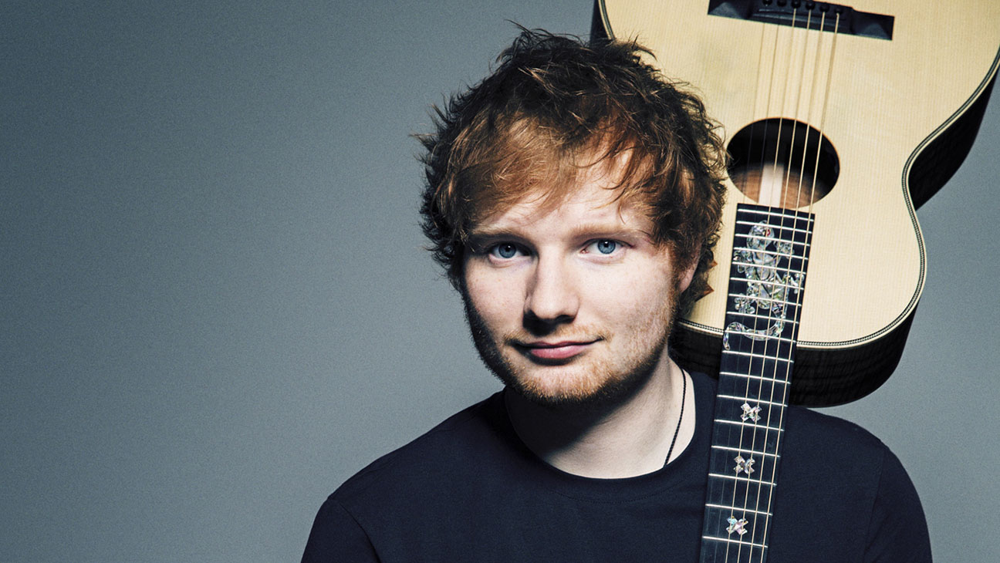
Target
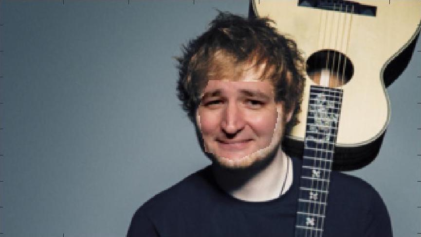
Pixels copiedBlended
One example that did not work so well was when I tried to blend Maria from
the movie Sound of Music onto an image of the quad. I speculate that this
resut is a failure due to the difference of background colors. Also in the
photo of Maria, the background consists of two very bright, contrasting
colors, the blue and the green. This is why the bottom of the source looks
like what it should look like, but the color changes as you move up the
source image.
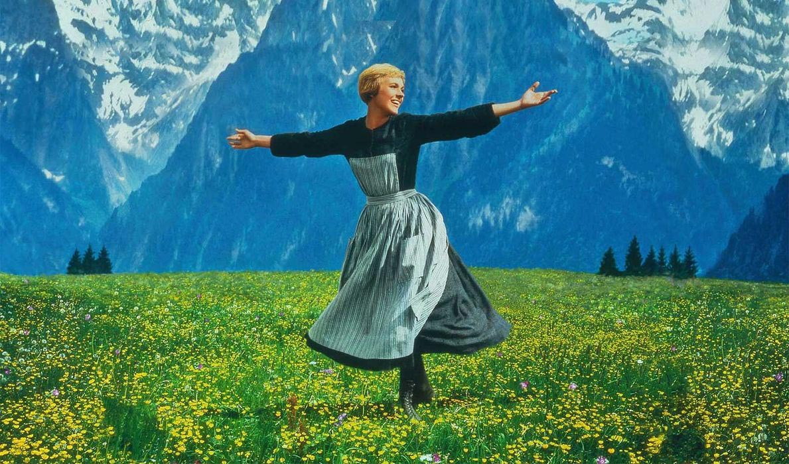
Source
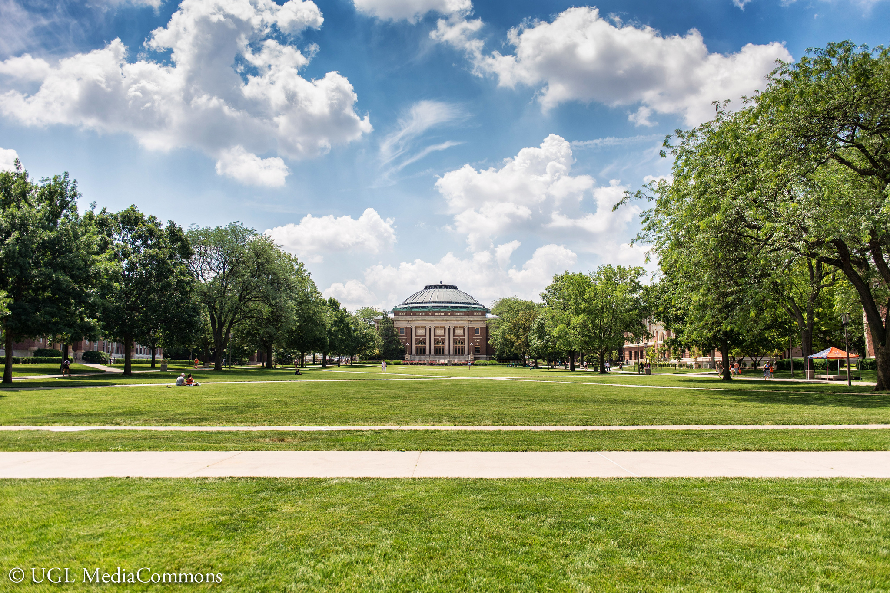
Target
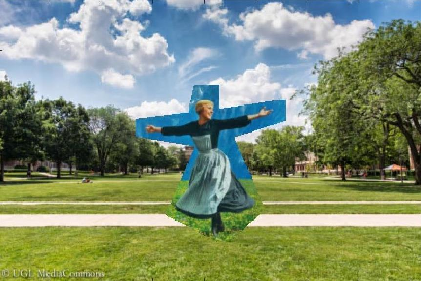
Pixels copied
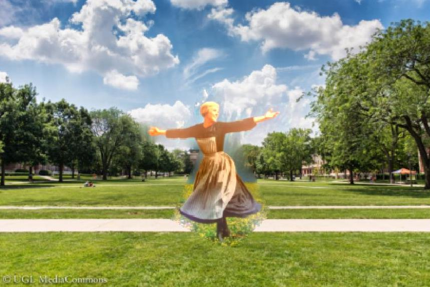
Blended
The last result of Poisson blending.
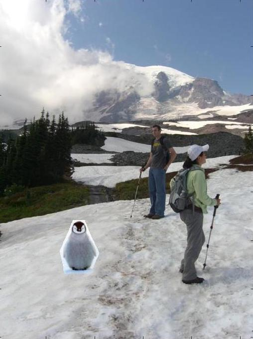
Pixels copied
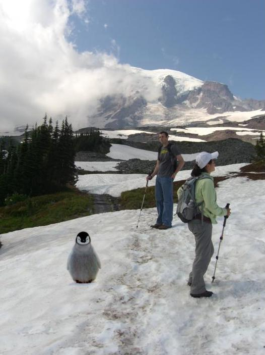
Blended
Mixed Gradients
For this problem, I used an image of text on top of an adventurous-looking
image to create an inspirational photo, one that you would typically find on
Pinterest. You can see that part of the background peeks through the
lettering. This is because the gradient of the target image was found to be
greater than the gradient of the source image, so the gradient of the target
image was retained.
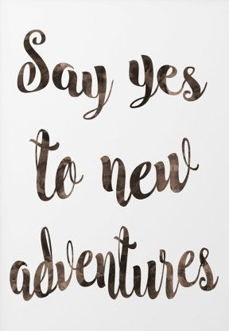
SourceTarget
Pixels copied
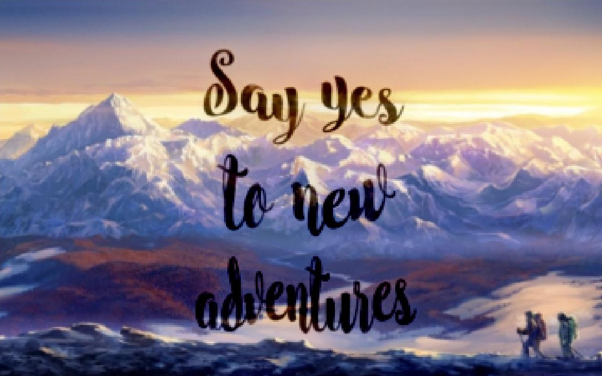
Blended
For my second example of mixed gradients, I chose to display some tattoos
on a girl's collarbone. The tattoo on the left is done with normal Poisson
and the tattoo on the right is done with mixed gradient blending. For the
tattoo using mixed gradeint blending, you can see that some of the shadows
on the girl's skin peeks through the ink of the tattoo. The tattoo on the
left done with normal Poisson blending looks less natural.
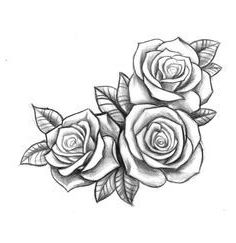
Source
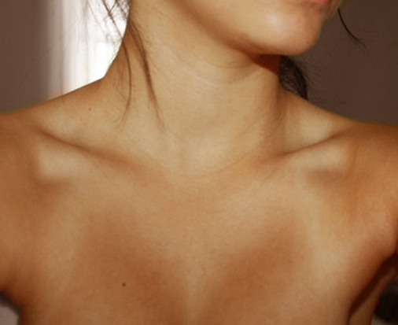
Target
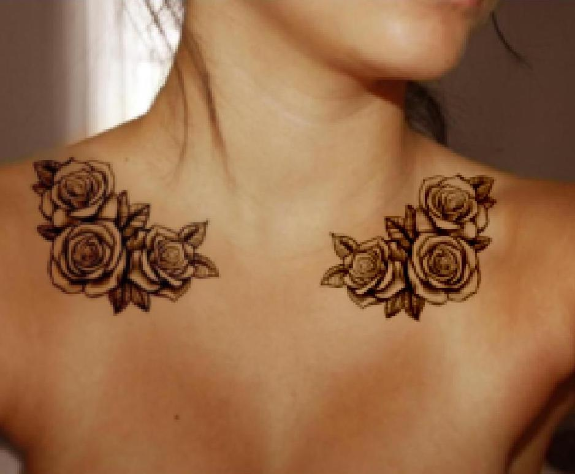
Poisson blending on left, mixed gradient blending on right